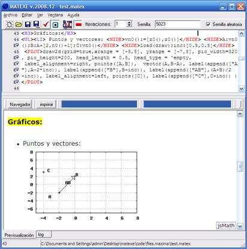

Puntos y vectores: <HIDE>vn0():=[z0(),z0()]</HIDE> <HIDE>A:vn0();B:A+[2,n0()+1];C:vn0()</HIDE> <HIDE>load(draw);inc:[0.5,0.5]</HIDE>
<PLOT>draw2d(grid=true,xrange = [-5,8], yrange = [-7,8], pic_width=320, pic_height=200, head_length = 0.5, head_type = 'empty, label_alignment=right, points([A,B]), vector(A,B-A), label(append(["A"],A-2*inc)), label(append(["B"],B+inc)), label(append(["AB"],(A+B)/2+inc)), label_alignment=left, points([C]), label(append(["C"],C+inc)) )</PLOT>

Created with the Personal Edition of HelpNDoc: Free EBook and documentation generator